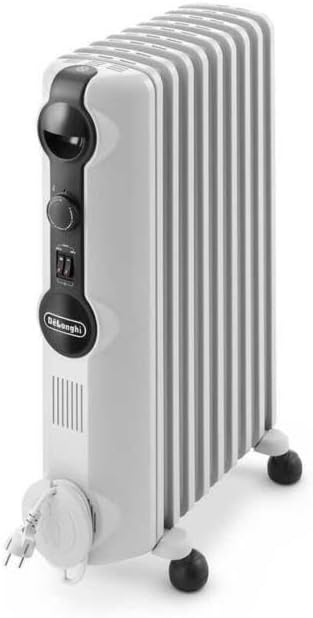
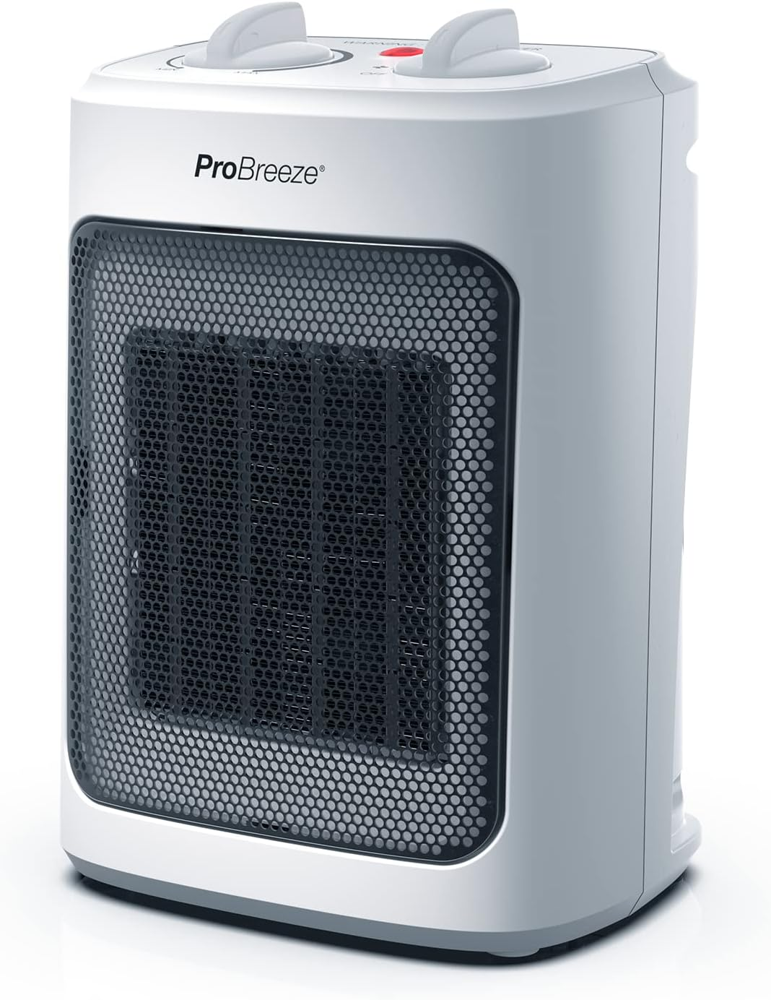
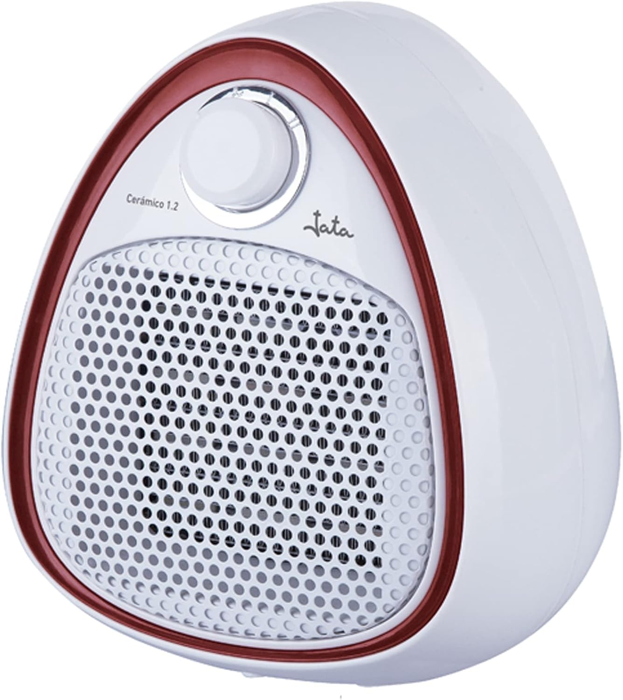

Calefactor cerámico o radiador de aceite: cuál es mejor para tu casa
Son los dos tipos de calefactor más vendidos y funcionan con lógicas opuestas. Uno calienta el aire en treinta segundos; el otro tarda veinte minutos pero no se oye. Elegir mal significa pagar de más o no usarlo.
Cómo calienta cada uno
Un calefactor cerámico hace pasar aire por unas placas de cerámica que se ponen incandescentes y lo lanza a la habitación con un ventilador. Calienta el aire, no los objetos. En cuanto lo enciendes notas el calor, y en cuanto lo apagas se acaba: el aire caliente se mezcla con el frío y en unos minutos estás como al principio.
Un radiador de aceite calienta con una resistencia un aceite sellado dentro de los elementos metálicos. Ese aceite no se consume ni hay que rellenarlo nunca: solo sirve para acumular calor. El metal caliente va templando el aire por convección natural, sin ventilador. Tarda en arrancar, pero cuando la habitación coge temperatura se mantiene, y sigue dando calor un buen rato después de apagarlo.
Esa es toda la diferencia, y de ahí sale todo lo demás.
Velocidad: gana el cerámico, sin discusión
Un cerámico de 2000 W deja una habitación pequeña usable en tres o cuatro minutos. Un radiador de aceite necesita entre quince y veinticinco minutos para empezar a notarse, y cerca de una hora para estabilizar un salón.
Si lo que quieres es entrar al baño por la mañana y no pasar frío, o templar el estudio mientras trabajas dos horas, el aceite llega tarde. Si el calefactor va a estar encendido toda la tarde, esos veinte minutos iniciales dan exactamente igual.
Ruido: gana el aceite, y por goleada
El cerámico lleva ventilador, y un ventilador suena. Los modelos silenciosos se mueven en torno a los 45 dB, que es el nivel de una conversación en voz baja; los más potentes, a máxima velocidad, pasan de 50 dB. Se nota si estás viendo una película o intentando dormir.
El radiador de aceite no tiene partes móviles: hace cero ruido, salvo algún chasquido metálico ocasional al dilatarse. Para un dormitorio, para una habitación de bebé o para un despacho donde haces videollamadas, esto suele ser el factor decisivo.

Consumo: no es lo que la gente cree
Circula la idea de que el radiador de aceite "gasta menos". No es exacto. Los dos son resistencias eléctricas y los dos convierten prácticamente el 100 % de la electricidad en calor: mil vatios de un cerámico dan el mismo calor que mil vatios de un radiador de aceite. Lo que cambia es cuánto tiempo está cada uno consumiendo a plena potencia.
Con una tarifa de entre 0,10 y 0,25 €/kWh —tomemos 0,18 € como referencia—, un aparato de 2000 W a tope cuesta unos 36 céntimos por hora. La diferencia real es esta:
- El cerámico arranca y para constantemente si tiene termostato, y como el calor se va en cuanto se apaga, tiende a trabajar mucho rato a potencia alta. Si lo usas una o dos horas seguidas, es la opción barata.
- El de aceite consume mucho al principio, pero una vez caliente la habitación el termostato lo deja parado buena parte del tiempo gracias a la inercia del aceite. En sesiones largas —cinco o seis horas en el salón— acaba saliendo más barato, además de más agradable.
La regla práctica: menos de dos horas seguidas, cerámico; más de cuatro, aceite.
Espacio, peso y movilidad
Un cerámico compacto pesa menos de dos kilos y cabe en un cajón cuando llega la primavera. Lo llevas del despacho al dormitorio con una mano.
Un radiador de aceite de nueve elementos ronda los diez o trece kilos. Lleva ruedas y se mueve sin esfuerzo por suelo liso, pero subirlo por una escalera o guardarlo en un altillo ya no es lo mismo. Y ocupa sitio: unos 25 cm de fondo pegado a la pared.
Seguridad
El radiador de aceite tiene superficie caliente: no quema al tocarlo un segundo, pero con niños pequeños o mascotas hay que pensárselo, y nunca se le debe poner ropa encima para secarla, aunque sea tentador.
El cerámico mantiene la carcasa templada y suele llevar antivuelco y protección contra sobrecalentamiento, pero expulsa aire muy caliente por la rejilla y no puede estar apuntando a una cortina o al sofá.
Para los dos vale lo mismo: enchufe de pared directo, nunca un ladrón ni un alargador fino, y nada de dejarlos encendidos toda la noche sin termostato.
Aire seco y polvo
El ventilador del cerámico mueve el aire de la habitación, y con él el polvo. En casas con alergias se nota. Además, al calentar el aire rápidamente, la sensación es de ambiente más seco, aunque técnicamente la humedad absoluta no cambie.
El radiador de aceite calienta por convección lenta: no levanta polvo y el ambiente resulta más suave. Es la razón por la que mucha gente lo prefiere para dormir.
Entonces, ¿cuál te conviene?
Elige cerámico si: lo quieres para el baño por las mañanas, para un escritorio, para una habitación pequeña, para uso puntual o como segundo aparato que vas moviendo por la casa. También si necesitas calor inmediato y no te importa el ruido de fondo.
Elige radiador de aceite si: vas a calentar un dormitorio toda la noche o un salón toda la tarde, si el silencio es innegociable, si hay alguien con alergia en casa o si quieres una temperatura estable en lugar de chorros de aire caliente.
Y una opción que casi nadie plantea: tener los dos. Un cerámico barato para arrancar rápido y un radiador de aceite para sostener la temperatura es la combinación más eficiente si pasas muchas horas en casa.
Tres modelos concretos
De los calefactores que hemos analizado, estos tres cubren bien los tres escenarios más habituales.

Para calor rápido y moverlo por casa: el Pro Breeze Mini Cerámico 2000W, por 37,99 €. Pesa 1,8 kg, oscila para repartir el aire y tiene termostato, aunque se queda sin temporizador ni mando. Con más de 5.000 valoraciones en Amazon es el ejemplo clásico de cerámico que cumple sin complicaciones. Cubre bien hasta unos 18 m² (verlo en Amazon).
Para dormir o pasar la tarde en el salón: el De'Longhi Radia S TRRS0920, 128,00 €. Nueve elementos, 2000 W, completamente silencioso y con calor residual cuando se apaga. Pesa 13,4 kg —lleva ruedas pivotantes— y tarda lo suyo en arrancar; a cambio, en estancias amplias es otra historia respecto a un cerámico (verlo en Amazon).
Para gastar lo mínimo: el Jata TC73 Cerámico 1200W, 31,90 €. Solo 1200 W, así que está pensado para espacios de hasta 15 m² —un baño, un escritorio—, pero es de los cerámicos más silenciosos (45 dB) y en verano funciona como ventilador. No tiene termostato ni temporizador: enciende y apaga tú (verlo en Amazon).
Lo que de verdad decide la compra
Antes de mirar modelos, responde a una pregunta: ¿cuántas horas seguidas va a estar encendido? Si la respuesta es "un rato por la mañana", cualquier cerámico decente te sirve y gastar 130 € en un radiador de aceite es tirar el dinero. Si la respuesta es "toda la tarde en el salón", el cerámico te va a cansar por el ruido antes de que acabe el invierno.
Productos mencionados en esta guía
Pro Breeze Mini Calefactor Cerámico 2000W
36,99 €De'Longhi Radia S TRRS0920
129,05 €
Jata TC73 Calefactor Cerámico 1200W
31,90 €Precios orientativos, consultados en Amazon. Pueden cambiar en cualquier momento.